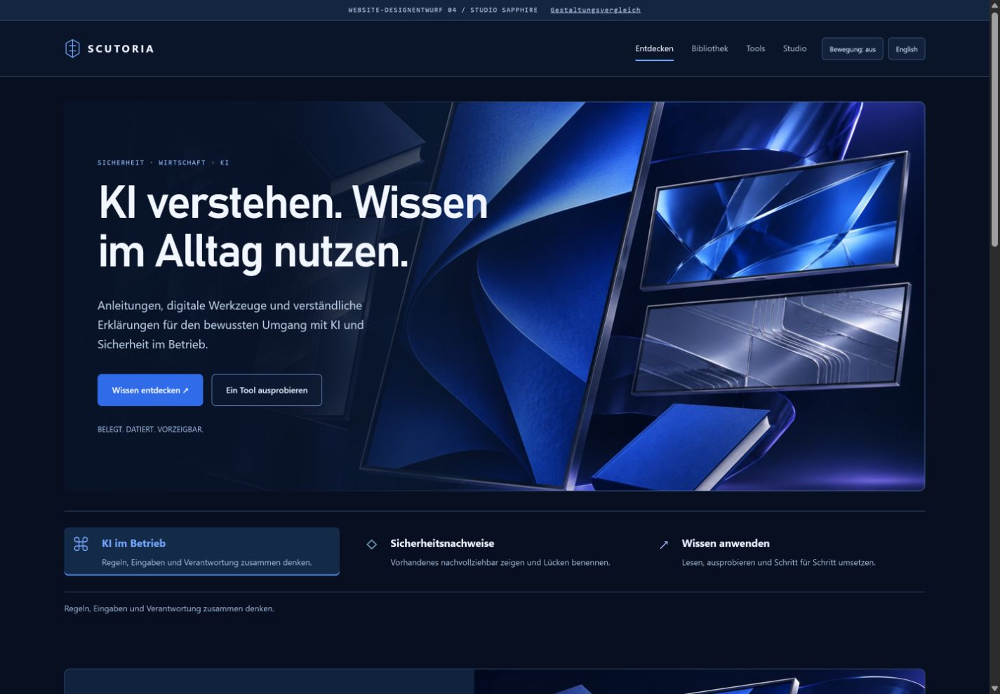

Signal Studio · ursprünglich
Dein Favorit in der Bildwirkung, dir insgesamt zu dunkel.
Eine überarbeitete Richtung auf Grundlage deines Feedbacks. Die filmische Bildwelt bleibt erhalten; die Seitenflächen wechseln auf mittlere Stahlblau- und Graublautöne. Keine neue Betriebsatlas-Interpretation.

Gleicher Studio-Aufbau mit Navy- und Saphirpalette wie Sapphire Vault.

Dein Favorit in der Bildwirkung, dir insgesamt zu dunkel.
Ursprüngliche Studio-Bildwelt. Etwas dunkleres Graublau, ergänzt um Petrol, Indigo und Silberblau.

Die Offenheit gefällt dir, die gesamte Gestaltung ist dir zu hell.